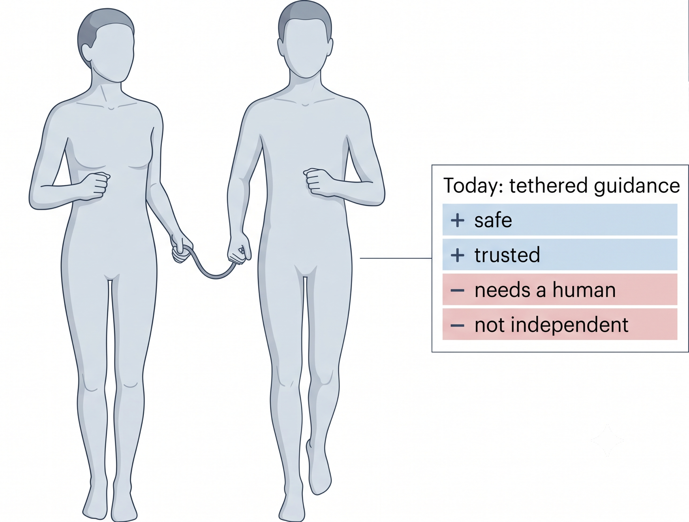

PACER: Cable-Driven Wearable for Independent Blind & Low-Vision Running
![PACER worn by a running figure on a lightweight torso vest, with each part labelled and its trade-off listed. Single chest module: flat low-motion mounting area, rigid core only around the motors, soft conforming shell, but the reaction must route into the vest straps. Routed conduit: the cord slides inside with no skin contact and a fixed path, but every bend costs force. Pulley block on the upper-arm cuff: three times the force from a small motor and the user can still pull the cord freely, but travel and speed are divided by three. Front-waist module: phone, controller, battery and IMU in one, mass centred and low.](../img/projects/pblv-device-annotated.png)
PACER worn for a run. A chest module drives a cord out to a cuff on each upper arm, so the wearable can pull an arm the way a guide's rope does. Each label lists what that part buys and what it costs.
Overview
Blind and low-vision (BLV) people run, and many run marathons, but almost always tethered to a sighted guide by a short rope. The guide does two things at once. They pull the rope to steer, giving a graded, spatial “this way” the runner can feel, and they talk, calling turns, hazards, and pace. It works, and runners trust it. But it makes running a two-person activity, so a BLV runner can't simply head out on their own.
PACER is a wearable that gives that guidance back to the runner. It reproduces the guide's two channels, the rope's directional pull and the guide's speech, directly on the runner's own body, so they can run independently.

Today's practice is tethered guidance from a sighted guide. It is safe and trusted, but it needs a human and isn't independent. PACER aims to give that guidance back to the runner.
Formative Study
Two studies, done with the people this is for, set the design.
Study 1, interviews with 5 blind runners. I interviewed five fully-blind runners from a “Dark Runners” community about how they run today. Three findings shaped everything after. They can't use vibration, which is too easy to miss, drowned out in public, and less intuitive than a voice or a pull. The direction they trust comes from the rope's graded tension, a real spatial pull rather than an abstract buzz. And they are dependent on the guide. The interviews also produced a taxonomy of 19 recurring running situations, from turns and drop-offs to a vehicle emergency.
Study 2, a survey of 5 guide runners and 18 sighted runners (N = 23). Across the same 19 situations, I compared how experienced guides handle each one for a BLV partner with how sighted runners handle it for themselves. The two groups agreed strongly on what to do (strategy similarity 78/100) but diverged sharply on how the information is sensed and delivered (channel similarity 17/100), a 61-point gap. Sighted runners lean on their own vision, hearing, and wrist devices, while guides re-express all of it through the rope (space and tension) and speech.
Design implications. That channel gap is the design space. The wearable should reproduce the guide's two channels. A spatial-pull channel (where, and how hard) stands in for the rope and carries direction and urgency, and a semantic channel (distinct patterns and voice) stands in for speech and carries hazard type. It also needs one reserved, unmistakable emergency-stop, and cues that fire early enough to slow or reposition.
Problem Statement
A sighted runner stays safe and on-course through a private channel, their own eyes, ears, and watch. A BLV runner has no access to it, so today a second person re-expresses that channel through a rope and their voice. The problem is to reproduce that guidance on the runner's own body, the rope's directional pull and the guide's speech, so a blind runner can run safely and independently, at speed.
The Device
PACER keeps the guide rope and removes the guide. Instead of a second person holding the other end, the wearable anchors the cord on the runner's own body and pulls. The cue is the one the runners already read every run, so there is no new code to learn. It sits on a lightweight torso vest and has four parts.
- Chest module. Both motors live in one flat housing on the chest, a mounting area that stays relatively still while running. Only the core around the motors is rigid, since that is what has to carry the reaction torque, and the rest of the shell conforms softly. The reaction force is routed out into the vest straps and spread across the back rather than pressed into one small patch of chest.
- Routed conduit. The cord runs inside a conduit along the vest, so it never drags on skin and its path is fixed no matter how the runner moves. The cost is that every bend in the route eats some of the force.
- Front-waist module. Phone, controller, battery, and IMU in one unit on the belt, which keeps the mass centred and low and puts the forward camera and the voice channel where they need to be.
Why the arms. The rope already acts on the arm, so the arm is where these runners have years of practice reading tension. Anchoring on the chest also gives the cord real leverage about the shoulder, which a strap over the top of the shoulder does not, and the pull lands with the arm rather than against it.
What each part buys and what it costs. The chest module trades a small rigid core for a stable mount, the conduit trades some force at every bend for a fixed cord path, and the pulley block trades travel and speed for three times the pull.
It steers the turn, it does not force it. The pull is a direction, not a rotation. Turning a running body outright would need heavy actuators and a rigid frame against the ground, which is not safe on a runner, so PACER applies about what a guide's rope applies and the runner completes the turn. The runner stays in control.
The open question is timing. Running is periodic, and the arm is in a different place every fraction of a second, so a pull means different things depending on when in the swing it arrives. Pulling at the end of the back-swing works with the arm's own reversal, while pulling mid-swing fights it. Detecting swing phase from the line itself, and choosing which phase carries a cue most clearly without disturbing gait, is the core research question of this work.
Sensing & Computer Vision
The survey also told the sensing stack what to look for first. Runners rated ground-plane hazards (potholes, uneven ground, drop-offs) and vehicles the most dangerous, so those are prioritized.
- Forward sensing. A phone camera runs an on-device object detector (YOLO, four classes, being person, obstacle, ground-hazard, vehicle) trained on our own greenway running footage and deployed to iPhone via CoreML for real-time, fully offline alerts.
- Close-range depth. A short-range depth sensor (LiDAR / time-of-flight) gauges how near and how urgent a hazard is, complementing the camera and filtering distant false alarms. Our characterization found it reliable to about 4–5 m, so it serves as a close-range safety layer rather than the primary sensor.
- Rear sensing. A Grove Vision AI edge module flags people or vehicles approaching from behind, the highest-value hazard case for a runner.
- Decision engine. Detections are ranked by urgency and drive the cable cues (and voice) only when the situation changes, keeping cues sparse and legible.
Evaluation Plan
The first two studies are done. The rest builds up in three stages.
- Bench characterization. Measure the pull force at the cuff, the cord speed, the loss through each conduit bend, and how freely the cord runs out through a full arm swing, then validate the forward, downward, and rear sensing stack against the perception requirements the survey prioritized (ground-plane hazards and vehicles first).
- Timing pilot. Stationary or slow-walk. Can a runner read the intended turn side and angle from the pull alone, and which phase of the arm swing carries a cue most clearly without disturbing gait?
- In-field study with BLV runners. With the Dark Runners community. 9 to 12 blind and low-vision runners, each running 3 km in two settings, a rubber running track and a park, comparing on-body guidance against the guide-rope baseline on safety, response, workload, and trust.
A manuscript on this work is in preparation.